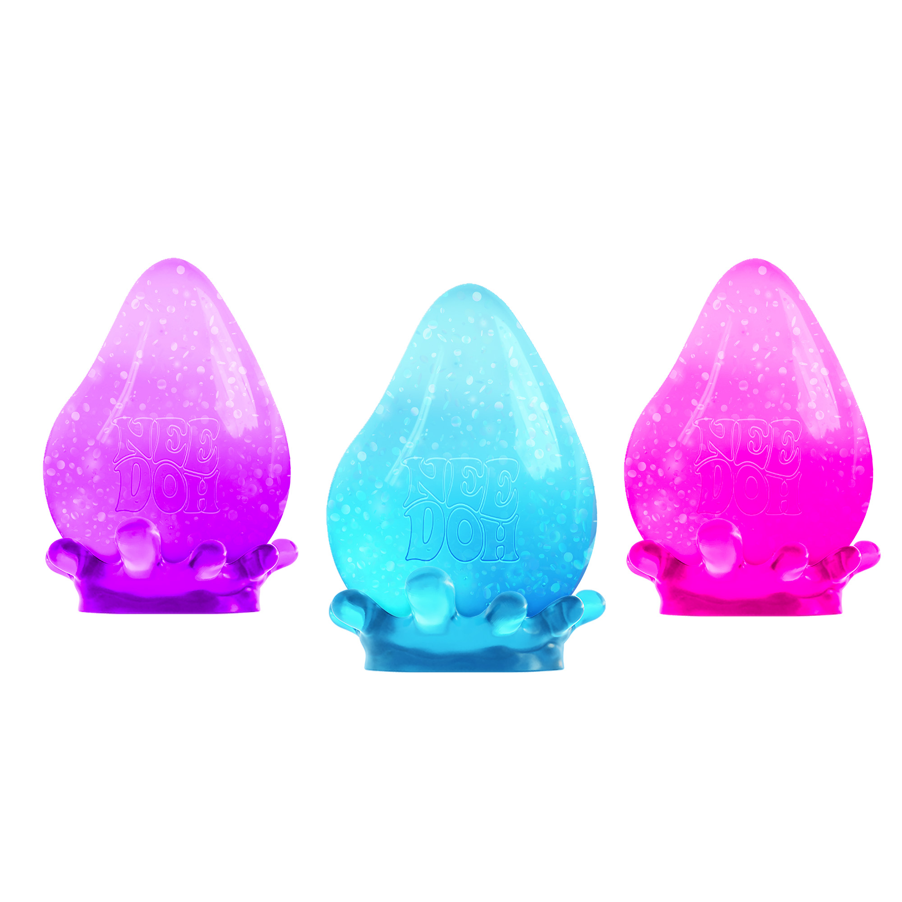

Part 1: 3D Scanning The Eiffel Tower
Looking around Room 102, there's a lot of cool models made by former students laying around. I tried multiple items to model, including my friend's Nee-Doh, and my black headphones, but they were not picked up by the Revo scanner — I found that when objects are brighter and solid-colored, they are easier to pick up on. Looking around, I found a 3D-printed model of the Eiffel Tower, which has complex ridges, holes, and shapes.Taking multiple frames and using the Merge, Subtract and Smooth functions, I was able to create a complex model of the 3D model of the Eiffel Tower! Here's a 360 view:

Part 2: Designing and Printing
Lego Arm
I printed and creating two different designs. My first was a Lego arm headphones holder, which I then realized could be made with subtractive methods. Here was the dimension work I did for it:I was inspired by Slic3d Labs
 ,. These can go on sale for around 15 dollars!
,. These can go on sale for around 15 dollars!
I continue to practice iterative design with this Lego design. First, because I was creating a sculpture, I decided to make a messy cardboard model that generally matched the dimensions I wanted for the arm sculpture. It was haphazard, it was scrappy, but it was deeply necessary for me to turn imagination into reality.

Second, I documented all the dimensions I wanted and a general sketch blueprint. I split the design into a couple components: base, lower arm, upper arm, and hand.
From this, you could see that I had not accounted for one thing: kerf! You need some space for tabs to enter slots — and for plastic, it's not easy to wiggle something in. The next time I build something like this, I will definitely be accounting for wiggle space!
Third, I began to model everything on Fusion 360. My knowledge from designing the carabiner in Week 2 came in handy, as it informed my usage of the Sweep function to create cylindrical designs around the bend of the Lego's elbow. As simple as it is, it thrilled me to have to do a little mathematical thinking (besides calculating for dimension) in quickly realizing that creating the elbow meant I had to use the arc of a circle to ensure the radius/width of the entire arm was the same. I guess I just like seeing how math pops up in creativity and design!
Organic Vase Design
Boy, did I learn a lot about Fusion 360 (and troubleshooting it) from this! Using the Spline tool, I hand drew a vase shape and used Revolve to make it 3D around the z-axis. Once I got a general 3D vase shape, I then proceeded to turn the Body into a Mesh, and used Remesh and Reduce Mesh to create small triangles. Then I created a form from the Mesh and used Pipe to create interesting pipe detailing around the vase shape.Now, this is where it gets trickier. There were a lot of holes in my form, which Fusion 360 does not like — especially when you want to turn a form into a solid again (which I did, because I wanted to 3D print this!). I decided to go to Form Repair, and am currently attempting to troubleshoot that. Fusion 360 must take time to process and understand how to repair, so I will be patient. In the meantime, I will include a image of the vase I created: